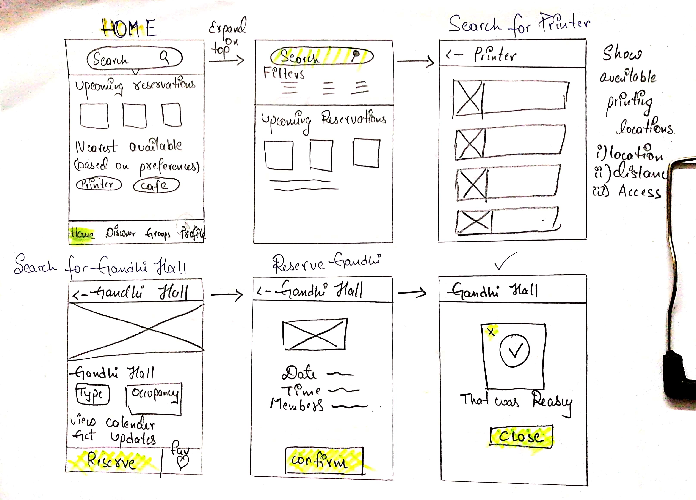
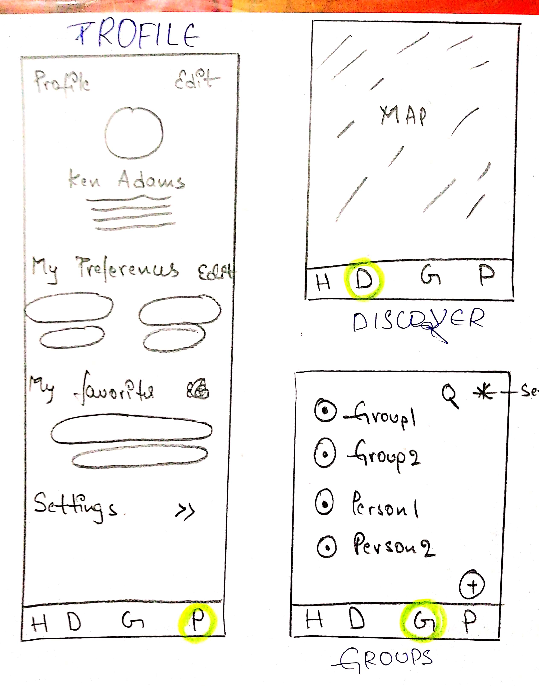
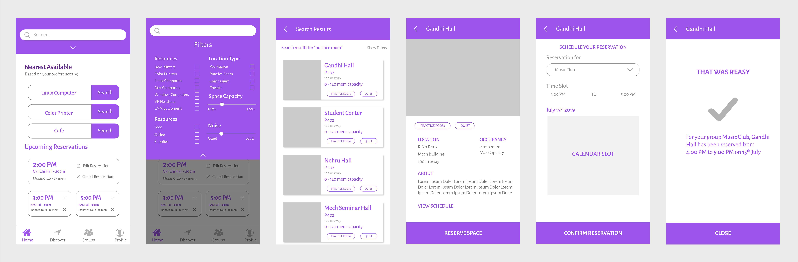
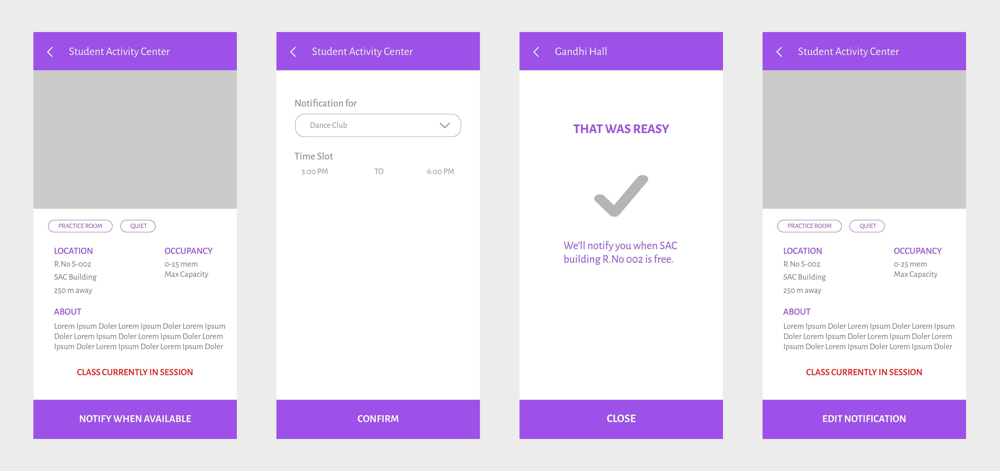
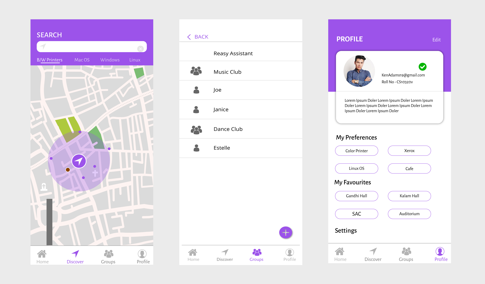
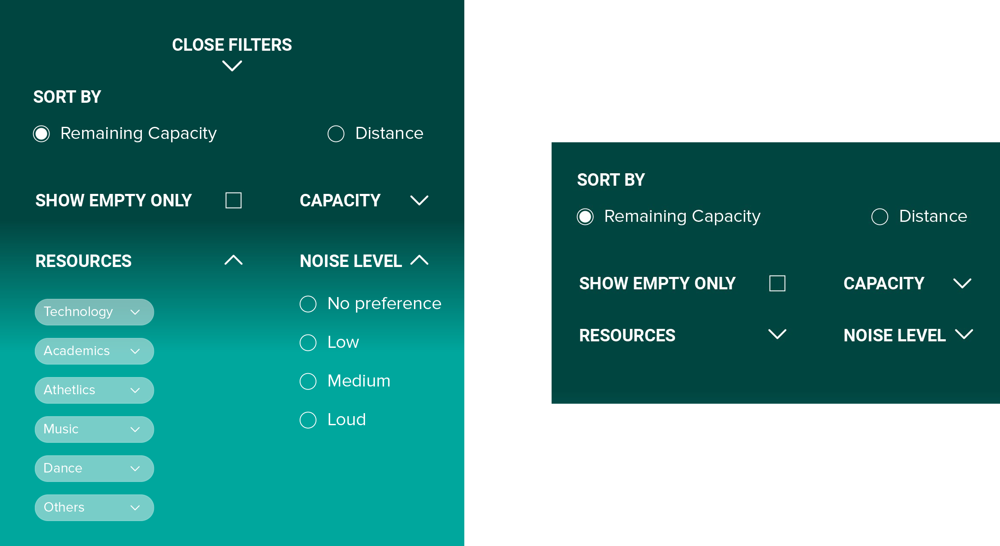

Reasy - A UX Case Study
Reasy is an app and service for students and professors that seeks to enhance and streamline the process of finding and reserving resources or spaces in a school.
Overview
This problem arised when my college has no other option but to submit written forms to Student's Council to reserve a community hall or club room for an event. Rather than going all the way to the Admin building they can simply use a mobile application to reserve a hall or club room. I had this idea for a long time but after hearing about the hectic process of booking a hall for an activity from my peers, I ventured to make this a reality. This is just a concept but covers the whole user experience and journey. I am no developer but I would love to see this application pop up in the app stores as this would greatly benefit users and make the whole “hectic” club room booking experience much easier. So I decided to use this opportunity and solve this problem by designing an easy and unique experience for users.
Registered clubs have the privilege of reserving rooms on campus for meetings and events sponsored by their organization. Reservable spaces include the Auditoriums, Student Activity Center, Available Classroom Space, Outdoor Event Space, and other campus venues listed by the campus. The main principle behind this product was to simplify the whole experience and process of reserving a club room for an event.
Challenge
Design a simple app for students to book community halls and club rooms for their respective events.
The Problem
Before anything else, what is the problem that I am trying to solve with my design. More importantly, is there a need for this?I spoke with my peers and some members of our college council members and club presidents and they told me about their troublesome and confusing reserving a club room is. And YES! there's absolute need for an application like this in our college.
The problems you think users may have are not always what they truly face.
Most of the time what we think will be the problem, will be different from real problem. A large part of the current issue is due to the lack of centralization of reservation system across the different departments and clubs. Our College has more than 50 departments and clubs combined and it’s difficult to merge all departments into a single reservation system.
To plan for an event, students have to first decide which club room they want to reserve. Post this decision, they have to choose the date and which event they would like to conduct and the runtime of the event. This process often requires some back and forth in order to settle on the ideal date, venue and time. This long process can often be tedious when making ad-hoc plans.
I concluded that the main issues were that:
- Going all the way from club rooms to admin building is troublesome and if they want to cancel the plan they have to do the same.
- Knowing which club is hosting what event in which hall is also a big pain point. They don't want jamming of events as they want students to participate in their events as well.
Functional Requirements:
- Members and staff can make reservations of club rooms and community halls.
- Members can check the status of their reservations.
- Members can check the history of their reservations.
In my previous projects I always used to competitor analysis of other apps to look up the trends and information architecture. But for this problem there were no such apps to do analysis so I just took my design decisions on pure instinct. Although I did look into the system of other reservation apps.
Timeline
I gave myself a 10 day time limit to complete, and I completed it in time. I carried out the whole design process from ideation to hi-fi prototype.
- Research - 2 days
- Storyboarding, Sketching and Low-Fi Prototyping - 1.5 days
- Mid-Fi Prototyping - 1.5 day
- User Testing and Iterations - 1 day
- Hi-Fi Prototyping and Corrections - 2 days
Design Process

Audit - OpenTable Reservation
I conducted a brief audit of other reservation apps and services that did not necessarily target reserving academic spaces, in order to get a better grasp on reservation processes in general. One notable example was OpenTable, a service for placing reservations at restaurants.
The Home screen allows the user to search for a restaurant, as well as find Dinner Tonight, Browse by Cuisine, and find places Near Them Now.
Searching for a restaurant by cuisine displays results based on relevance. The cards display name, rating, distance, and available time slots.
The map icon shows the cuisine restaurants available in that area along with the booking timings available.
Results can also be filtered by distance, rating, alphabetical order, price, and cuisine type.
Once a restaurant is selected, the user can select a time slot to book a table, favorite, or share the location.
User Research
Contextual Inquiries
Over the course of a few days, I reached out to 30 different classmates and 3 professors through both online and face-to-face interactions to get opinions on the most relevant information about university spaces. I also sent out an online form through various social media channels and collected 16 responses.
Interviews-relevant information about Spaces
Some of the questions I asked in regards to information about university spaces were:
- What would you say is the most relevant information about an academic building or hall?
- What would you say is the most relevant information about a non-academic building or hall (student center, music practice room, stage, etc)?
- What are some frustrations you experience in university settings in regards to resources, technology, spaces, communication, etc?
- What's your idea about a university app?
- Printing and Xerox status
- Academic schedule and university information
- I'd say this depends on what I'm currently trying to do at the building. For example if I'm trying to work in an open place, say for example digital library, I'd like to know how many people already signed in to that so that I don't need to waste time going there. Otherwise, if I'm just looking for a place to sit and work, I need to know what rooms have currently classes going on and what rooms are empty and when will be classes next in these rooms.I'd also like to know what professors are around at that building and their time of being at that building.
- location
- Availability
- Parking lot
- Canteen and food centers available
- Map
- The layout of the building and what type of classes are being taught at that place. Students should know whether they need to check-in the building or not.
For this question the same I got same answers as above.
- Lacking. All of it lacking
- Parking space
- Security people searching us and not allowing us when it's night time
- empty spaces
- I find computer labs often being crowded. And the equipment being broken like broken lan cables, mouse etc.
- Being simple and functional, I don't need too much unncessary info.
- Maybe showing the events, seminars, university activities in a timeline.
- Renewing our library books with the app would be a big help.
Interview Insights
From the online, in-person, and survey responses, I pulled out a few recurring insights about relevant information of a location and the reservation process within the university.
General InformationMost people agreed that the most important general information about a university-related location included:
- Hours
- Location
- Neay by areas
- Accessibility
- Services
In regards to availability, people tended to care most about how many people were in a room, seating capacity, and parking spaces.
Wait timeThe time taken to receive a reservation confirmation can be long and unpleasant, especially when working with university-run organizations.
Contextual InformationWhile looking for a space, context of why the person wants the space is important to keep in mind. Wanting a room for studying is different from wanting the same room for a club meeting, event venue, etc.
User Persona
I was designing an experience primarily for students and professors, so I created four different user personas that embodied different needs during the reservation process. Unlike in my previous project I didn't use images and demographics in user personas. They don't help us empathise because they feel completely generic and staged (I did use the persona's pain points and needs as a reference but never really felt anything about the photo or the demographics of the fictional person, I just thought it's necessary to keep an image of the character we're keeping in mind. But that's not the case). But maybe not all photos need be like this. Finding a perfect picture that fits our scenario is hard, so I skipped them. For my next project I plan on using fictional sketches as the embodiment of my character. But as of now I don't want to use my time as the deadline is a week.
1.The Student Leader
The Student Leader is heavily involved with their club extracurriculars and arranges many club venues.
needs :Easily reserve school venues for club events and reserve rooms quickly for spontaneous officer meetings.
2. The Studious
The Studious takes their studies seriously, but has trouble focusing in their dorm room. They work and study alone, often times with coffee and snacks.
needs :Quiet, empty spaces with few windows and distractions.
3. The Artist
The Artist is a talented musician or debator or painter or basically anyone talented who is always looking to better their skills. They lead their university’s team and hold frequent rehearsals
needs :Good ventilation, practice spaces for their group, adequate amount of chairs and tables for various purposes.
4. The Educator
The Educator is a professor who wants their students to succeed no matter what. They often spend time in their office and are willing to help students for one-on-one help sessions.
needs :Finding quiet tutoring spaces, simple and fast communication with students.
User Flow
I thought about looking at the process of reservation from the simplest steps possible.

Grouping The Data : Affinity Mapping
Based on the interviews and present app trends and everything related to room reserving services, I wrote them down on some notes and grouped them on functionality basis. I wrote whatever ideas I got, it was a mini brainstorming session for me. The affinity mapping experience was outstanding, I was doing all by myself and was overwhelmed by the thoughts and UI options I was thinking. I listed each idea on individual notes and later grouped them. I used to write the ideas on notebook and circled the same functional with coloured sketches.
Wireframes
At this point I continued developing different wireframe iterations of how this reservation experience might work. I took my notes from Affinity Mapping as a foundation.


Mid Fidelity Screens
As soon as I finished sketching, I started working on Mid-Fi Screens, for this purpose I used Adobe Illustrator. I only designed the main screens of the application. The main idea of this mid-fi mockups is to remove any unwanted UI elements and finalize the app UI.



User Testing - Mid-Fi Mockups
I was able to have four college students test different early prototype iterations made in InVision for the process of reserving spaces of a school in a mobile app. While I wish I could have had more time and resources to create more iterations and tests, I was still able to get a lot of valuable feedback from my user testing sessions. Although No one has give me any deadline, it's the time limit I kept to myself, to test my potential. Some of the main recurring insights I found are shown below:
- The first flow of looking through filters in the Search Bar feels a little overwhelming -- try condensing a bit or separating the information more into sub-categories or drop-downs.
- The “Nearest Available” section is slightly misleading.
- Consider adding helper text for each module.
- Always display confirmations after changing the filter settings of a search.
- Is the ‘Nearby food/coffee/stores’ necessary in the filter section?
- The interface itself should be the Search process itself. Anything more than that gets confusing and bogged down.
- The down menu section seems unnecessary. The concept of the app is simple enough to have everything live on the main “Home” page.
User Testing - Scrapped Ideas
I received a lot of helpful feedback during the process of user testing and ended up scrapping a few of the early concepts I thought about including in my design.
Search the Location of Student or Teacher
I originally thought of the idea of being able to search the status of another student or teacher for the purpose of finding classmates and teammates, but decided to omit it for privacy and safety reasons.
View and Input Status (In-Class, Busy, Off-Campus, etc)
This feature would also tie into searching for a classmate or professor to work with, but people are typically already connected with their group-mates through other messaging platforms, so I figured this would be unnecessary.
Search for Nearby Coffee and Food
While I thought this would be interesting to include in the results page of a space, but I did not want to bog down the MVP with too many features and decided to focus on school resources and rooms.
Down Menu Section
The last quote from my User Testing. Based on that I contacted an App Dev about the pros and cons about that menu and as the app concept is to be simple. I decided to skip that and include them in the profile section.
Home Screen Iterations
Iteration 1: Bottom Navigation Menu

An iteration with a bottom navigation menu for “Home,” “Reservations,” “Profile,” and “Settings.”
Iteration 2: Floating Action Button

An iteration with a bottom right Floating Action Button to pull up a user profile pop-up modal.
Iteration 3: No Menu

An iteration with all of the information from a complete scrolling interface on the “Home” screen.
High Fidelity Design
Reasy(reserve+easy)
Streamlining the reservation experience of university spaces for students and professors, based on their needs and context. Reasy is an app and service for students and professors that seeks to enhance and streamline the process of finding and reserving resources or spaces in a school.
Reasy - Kiosks
Kiosks are placed around the school at the front of each building, and utilize a simple touch interface.
Students and teachers can search for resources and spaces with names or keywords. The “Quick Search” feature displays a list of search suggestions, based on the user’s preferences and past activity. Students and teachers scan their school I.D. cards to enter rooms so Reasy is able to know the amount of people at any given space. I.D. cards can also be used to sign into the kiosk at the school’s new Student Center to search availability and reserve spaces without the mobile app.


Reasy - Filters
Filters can be expanded to show “Sort By” Remaining Capacity or Distance, the option to show Empty spaces only, Remaining Capacity, Resources, and Noise Level. Remaining Capacity, Resources, and Noise Level can all be expanded further within their own drop-downs to display more specific details.

Reasy - Functionality
 After selecting a search result, users
can view other information about the
space such as Location, Hours,
Occupancy, Existing Reservations, and
Other Details.
Users can schedule their time slot for
the space and set reminder
notifications while confirming the
reservation.
After selecting a search result, users
can view other information about the
space such as Location, Hours,
Occupancy, Existing Reservations, and
Other Details.
Users can schedule their time slot for
the space and set reminder
notifications while confirming the
reservation.
Users can also make reservations for
their group and club. All members of
the group would be notified of this
space reservation.
Groups can be managed in the user’s
profile section.
The Home screen of Reasy shows the user’s Upcoming
Reservations and Saved Locations.
The Profile section displays the user’s Preferences, their
Groups, and their other connected accounts.
Updates on reservations can be sent
through multiple channels, including other
SMS platforms and school email.
The results cards of search results show
the name, capacity, availability, and
distance of the space.
Green indicates available capacity, red
indicates unavailable spaces, and blue
indicates empty spaces.
Design System

Reasy - UI Screens
1.Home Screen

2.Search

3.Results

4.Filters

5.Space Description

6.Reserve Space

7.Confirm

8.Edit Reservation

9.Update Reservation

10.Hall Ocuupied

10.Get Notification

11.Confirm

12.Profile

Partly Functional Prototype
Conclusion and Takeaways
At this point this project is far from complete, with a one man team at my level I coundn't complete the full-fledged prototype, the sub-functionalities and the micro interactions are being left. The thoughts on my next project is to have a 10 day timeline and to complete the fully functional prototype including micro interactions.
One of the first speedbumps I hit during my design process was feeling overwhelmed by all of the possible filters that might be included in searching for a location or resource. My earlier wireframes had an extremely dense display of filters, and the process of sorting and condensing all of the information I originally wanted to display proved to be challenging.
As I went through my design process, I constantly had ideas of features to add and augment the overall experience. However, I had to ground myself multiple times to avoid deviating away too much from my original goal of reservation.
With everything said, I can feel myself constantly improving in the field of UX. Mastering the Information Architecture, the psychology of customers and working correct on a deadline needs a lot of experience. The more I dive into the field the more I feel knowledgeable and unknowledgeable at the same time about UX and Product Strategy. I thoroughly enjoyed the opportunity to design an experience for my fellow students. I had a lot of fun and feel as though I learned a few new things about the mental model of reservation in general.
I still got a long way ahead. Reading blogs and books, talking with and obverving users (a lot.....) and forming product and UI strategies, constantly improving myself is the main and long-term goal.....